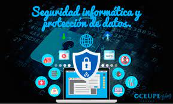

Menu
Menu
Menu
Menu
Header

Seguridad de la información: contexto e introducción
Con este curso introductorio de seis semanas de duración, te adentrarás en el universo y el contexto de la seguridad de la información.
Fecha inicio:
24 de agosto del 2021
Ciberconflictos internacionales
En este sentido, quienes tomen este curso online gratuito adquirirán conocimientos para el análisis y la gestión de ciberconflictos e incidentes
Fecha inicio:
1 de junio del 2021
Seguridad en redes
Este curso online gratuito que ofrece el Instituto de Tecnología de Georgía, a través de la plataforma Udacity, pretende ser una introducción al tema de la seguridad en redes y computadoras.
Fecha inicio:
1 de julio del 2021
Historia de Internet, Tecnología y la Seguridad
En once semanas, este curso online gratuito te invita a estudiar el impacto de la tecnología en nuestras vidas y su importancia en las sociedades actuales.
Fecha inicio:
26 de Abril del 2021